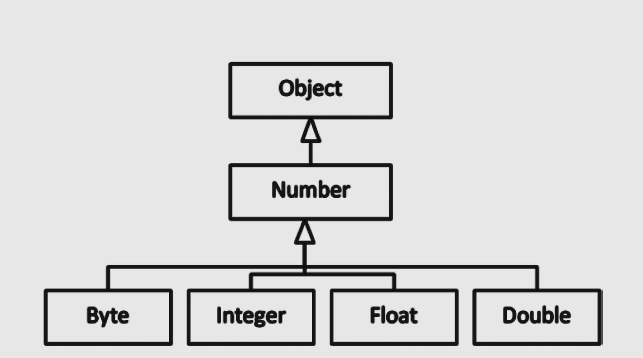

JAVA SE 8
Modificador de Acesso Privado
O modificador de acesso privadoe é o mais rigoroso modificador de acesso. Um membro da classe privada não pode ser acessado do exterior da classe; somente membros da mesma classe pode acessar membros privado.. É comparável a uma sala de cofre em um banco, que só pode ser acessada por um conjunto de funcionários autorizados e proprietários de cofres. No exemplo anterior o radius de campo privado da classe Circle é acessível apenas dentro da classe Circle e não em qualquer outra classe, independentemente do pacote incluído.
Modificadores de Acesso Protected e Default
Modificadores de accesso protected e default são bastante similares entre si. Se um membro do método ou campo é declarado como protected ou default, então o método ou campo pode ser acessado de dentro do pacote. Note que não existe palavra chave especifica para fornecer acesso default; de fato, quando nenhum modificador de acesso é especificado, o membro tem acesso default. Note que também acesso defaut é conhecido como um pacote de aceesso protected. Protected e default são comparávis para a situação em um escritório onde uma sala de conferência está acessível somente para um departamento.
Qual a diferença entre protected e acesso default? Uma diferença significante entre esses dois modificadores de acesso surge quando nós falamos sobre subclasses além de outros pacotes que tem na superclasse. Neste caso, membro protected são acessível na subclasse, enquanto membros default não são.
Uma classe (ou interface) não pode ser declarada como private ou protected. alem do mais, membros de métodos ou campos de uma interface não pode ser declarada como private ou protected.
Tabela dos modificadores de acesso e sua visibilidade:
| Modificadores/ Acessibilidade | Dentro da mesma class | Subclasse dentro do pacote | Subclasse fora do pacote | Outra classe dentro do pacote | Outra classe fora do pacote | |
|---|---|---|---|---|---|---|
| Public | Sim | Sim | Sim | Sim | Sim | |
| Private | Sim | Não | Não | Não | Não | |
| Protected | Sim | Sim | Sim | Sim | Não | |
| Default | Sim | Sim | Não | Sim | Não |
HERANÇA
Herança é um mecanismo de reusabilidade na programção orientado a objeto. Com herança, a propriedade de vários objetos são explorados para formar relacionamentos um com outro. As propriedades abstrata e comuns são fornecidos na superclasse, que está acessível para sublcasse mais especializada. Por exemplo, impressora colorida e uma impressora preto e branco são tipos de impressora(unica herança); uma impressora multifuncional é uma impressora, um scanner e uma fotocopiadora ( múltipla herança).
Por que herança é um poderoso recurso? Porque ele suporta modelar classes em uma hierarquia, e tal modelo de hierarquia são fáceis de entender. Por exemplo, você pode categorizar logicamente veículos com duas rodas,três rodas, quatro rodas, e assim por diante. Na categoria quatro rodas, existe carros, vans, ônibus. Na categoria carros existe sedans, SUvs.. Quando categoriza hierarquicamente, torna-se mais fácil de entender, modelar e escrever programas.
Considere um simples exemplo usado na seção mais cedo: classe Shape é uma classe base e Circle é uma classe derivada. Em outras palavras, um Circle é um Shape; similarmente, um Square é um Shape. Portando, uma relacionamento de herança pode ser referido como relação IS-A ou É-UM.
Na biblioteca java você pode ver o uso extensivo de herança. No exemplo abaixo mostra uma hierarquia de herança parcial de java.lang.library. A classe Number abstrai vários tipos numéricos(referência) tal como Byte, Integer, Float, Double, Short, e BigDEcimal.
A classe Number tem método comuns que são herdados pelas classes derivadas. A classe Number possui muitos métodos comuns que são herdados pelas classes derivadas. As classes derivadas não precisam implementar os métodos comuns implementados pela classe Number. Além disso, você pode fornecer um tipo derivado onde o tipo base é esperado. Por exemplo, um Byte é um Number, o que significa que você pode fornecer um objeto de byte onde um objeto de número é esperado. Você pode escrever métodos de propósito geral (ou algorítmos) ao escrever métodos para o tipo base.
// Ilustra como abstrair diferentes tipos de números em uma hierarquia de números
// torna-se útil na prática
public class TestNumber {
// pega um array de números e os soma
public static double sum(Number [] nums) {
double sum = 0.0;
for(Number num : nums) {
sum += num.doubleValue();
}
return sum;
}
public static void main(String []args) {
// cria um array Number
Number []nums = new Number[4];
// assign derived class objects
nums[0] = new Byte((byte)10);
nums[1] = new Integer(10);
nums[2] = new Float(10.0f);
nums[3] = new Double(10.0f);
// passa o array Number para somar e imprimir o resultado
System.out.println("The sum of numbers is: " + sum(nums));
}
}
Este programa imprime isso:
The sum of numbers is: 40.0
NO método main(), você pode declarar nums como um Number[]. Uma referência Number pode esperar qualquer destes tipos derivados de objetos. Você está criando objetos do tipo Byte, Integer, Float, e Double com valor inicial de 10; o array nums espera estes elemeentos.(Note que você precisa de um cast explícito em new Byte((byte) 10) ao invés do planejado Byte(10) porque Byte leva argumento byte e 10 é um int).
O método sum leva um Number[] como argumento e retorna a soma dos elementos Number. O tipo double pode esperar alcance de valores maiores, assim você ver double como um tipo de retorno. O método sum.Number tem um método doubleValue() e este método retorna o valor mantido pelo Number como um valor double. O loopfor atravessa o array, adcionam os valores double, e então retorna a soma.
Como pode ver o método sum() é um método geral que pode manipular qualquer Number[]. Um exemplo semelhante pode ser fornecido a partir da biblioteca padrão Java, em que a classe java.util.Arrays possui um método estático binarySearch().
static int binarySearch(Object[] a, Object key, Comparator c)
Esse método pesquisa uma determinada chave (um tipo de objeto) no determinado array de objetos. Comparator é uma interface que declara os métodos equals e compare. Você pode usar binarySearchfor para objetos de qualquer tipo de classe que implemente essa interface Comparator. Como você pode ver, a herança é um recurso poderoso e útil para escrever métodos de propósito geral.
Polimorfismo
Em programação orientada a objeto (OOP), uma mensagem pode ser interpretada de múltiplas maneiras(polimorfismo), dependendo do objeto.
Polimorfismo pode ser de duas formas: dinnâmico e estático.
- Quando formas diferentes de uma única entidade são resolvida durante o tempo de execução tal polimorfismo é chamado de polimorfismo dinâmico.
- Quando formas diferentes de uma entidade são resolvidas no temo de compilação tal polimorfismo é chamado de polimorfismo estático.
Note que os métodos abstratos usam o polimorfismo de tempo de execução.
Polimorfismo Runtime
Você acabou de aprender que uma referência de classe base pode se referir a um objeto de classe derivada. Você pode invocar métodos desta referência de classe base; contudo, a invocação do método atual depende do tipo dinâmico do objeto apontado pela referência de classe base. O tipo da referência da classe base é conhecido como o tipo estático do objeto e o objeto real apontado pela referência em tempo de execução é conhecido como o tipo dinâmico do objeto.
Quando o compilador ver a invocação do método de referência de classe base e se o método é um método que pode ser sobrescrito(um método não estático e não final, o compilador adia a determinação do método exato a ser chamado para o tempo de execução (ligação tardia). No tempo de execução, com base no tipo dinâmico real do objeto, um método apropriado é chamado. Esse mecanismo é conhecido como resolução de método dinâmico ou chamada de método dinâmico.
Runtime Polimorfismo: Um exemplo
Considere que você tem o método area() na classe Shape. Dependendo da classe derivada - Circle ou Square, por exmplo - o método area() será implementado diferentemente, como é mostrado a seguir:
//TestShape.java
class Shape {
public double area() { return 0; } // implementação default
// outros membros
}
class Circle extends Shape {
private int radius;
public Circle(int r) { radius = r; }
// outros construtores
public double area() {return Math.PI * radius * radius; }
// outras declarações
}
class Square extends Shape {
private int side;
public Square(int a) { side = a; }
public double area() { return side * side; }
// outras declarações
}
public class TestShape {
public static void main(String []args) {
Shape shape1 = new Circle(10);
System.out.println(shape1.area());
Shape shape2 = new Square(10);
System.out.println(shape2.area());
}
}
Este programa imprime o seguinte:
314.1592653589793 100.0
Este programa ilustra como o método area() é chamado baseado no tipo dinâmico de Shape. Neste código, a declaraçaõ shape1.area(); chama o método area() de Cricle's enquanto a declaração shape2.area(); chama o método area() de Square e consequentemente o resultado. Agora, vamos fazer uma pergunta mais fundamental: por que você precisa sobrescrever métodos? Em OOP, a idéia fundamental em herança é fornecer uma funcionalidade padrão ou comum na classe base; Espera-se que as classes derivadas forneçam funcionalidades mais específicas. Nesta classe base Shape e nas classes derivadas Circle e Square, a classe Shape forneceu a implementação padrão do método area(). As classes derivadas de Circle e Square definiram sua versão do método area() que sobrecreve o método area() da classe base. Portanto, dependendo do tipo de objeto derivado criado, a partir da referência da classe base, as chamadas para o método area() serão resolvidas para o método correto. Sobrescrever (isto é, o polimorfismo de tempo de execução) é uma idéia simples, mas poderosa, para estender a funcionalidade.
Vamos agora discutir o polimorfismo em tempo de compilação (sobrecarga).
Sobrecarga de métodos
Em Java, você pode definir vários métodos com o mesmo nome, desde que as listas de argumentos sejam diferentes umas das outras. Em outras palavras, se você fornecer diferentes tipos de argumentos, diferentes números de argumentos ou ambos, poderá definir vários métodos com o mesmo nome. Esse recurso é chamado sobrecarga de método. O compilador resolverá a chamada para um método correto, dependendo do número real e / ou dos tipos dos parâmetros transmitidos.
Vamos implementar um método na classe Circle chamado fillColor() que preenche um objeto circular com cores diferentes. Quando você especifica uma cor, você precisa usar um esquema de cores, e vamos considerar dois esquemas - esquema RGB e esquema HSB.
1. Quando você representa uma cor combinando componente de cores REd (Vermelho), Green(Verde), e Blue(Azul), isto é conhecido como esquema RGB. Por convenção, cada valor das cores é fornecido tipicamente no alcance de 0 à 255.
2. Quando você representa uma cor combinando valores Hue(contrataste), Saturation(Saturação), e Brightness(Brilho) este esquema é conhecido como HSB. Por convenção cada valor é tipicamente fornecido no alcance de 0.0 à 1.0.
Desde que valores RGB são inteiros e HSB são valores ponto flutuante, como suportar ambos esquemas para chamar o método fillColor()?
class Circle {
// outros membros
public void fillColor(int red, int green, int blue) {
/* colorir o círculo usando valores de cores RGB - código real omitido */
}
public void fillColor (float hue, float saturation, float brightness) {
/* colorir o círculo usando valore HSB – código real omitido */
}
}
Como você pode ver, ambos métodos fillCollor() tem exatamente o mesmo nome e ambos levam três argumentos; contudo, o tipos de argumentos são diferentes. Baseado no tipo de argumento usado enquanto chamar o método fiilColor() em Circle, o compilador irá decidir exatamente qual o método chamar. Para instância, considere o chamado dos seguinte métodos:
Circle c1 = new Circle(10, 20, 10); c1.fillColor(0, 255, 255); Circle c2 = new Circle(50, 100, 5); c2.fillColor(0.5f, 0.5f, 1.0f);
Nesse código, para o objeto c1, a chamada para fillColor() tem argumentos inteiros 0, 255 e 255. Portanto, o compilador resolve essa chamada para o método fillColor(int vermelho, int verde, int azul). Para o objeto c2, a chamada para fillColor() possui os argumentos 0.5f, 0.5f e 1.0f; daí resolve a chamada para fillColor(float hue, float saturation, float brightness).
No exemplo acima, o método fillColor() é um método sobrecarregado. O método tem o mesmo nome e o mesmo número de argumentos, mas os tipos dos argumentos são diferentes. Também é possível sobrecarregar métodos com diferentes números de argumentos.
Esses métodos sobrecarregados são úteis para evitar a repetição do mesmo código em diferentes funções. Vamos ver um exemplo simples.
//HappyBirthday.java
class HappyBirthday {
// método wish sobrecarregado com String como argumento
public static void wish(String name) {
System.out.println("Happy birthday " + name + "!");
}
// método wish sobrecarregado com nenhum argumento;
// este metodo por sua vez invoca o método wish(String)
public static void wish() {
wish("to you");
}
public static void main(String []args) {
wish();
wish("dear James Gosling");
}
}
Este programa imprime o seguinte:
Happy birthday to you! Happy birthday dear James Gosling!
Aqui, o método desejado (String name) serve para desejar “Happy birthday” quando o nome da pessoa é conhecido. O método padrão wish() é para desejar “Happy birthday” a qualquer pessoa. Como você pode ver, você não precisa escrever System.out.println novamente no método wish(); você pode simplesmente reutilizar a definição do método wish(String) passando o valor padrão “to you” como argumento para wish(). Essa reutilização é eficaz para definições de métodos grandes e relacionadas, já que economiza tempo escrevendo e testando o mesmo código.
Sobrecarga de Construtor
Um construtor padrão é útil para criar objetos com um valor de inicialização padrão. Quando você quer inicializar os objetos com diferentes valores em diferentes inicializações, você pode passá-los como argumento para os construtores. Você pode ter múltiplos construtores em uma classe, que é sobrecarga de construtor. Em uma classe, o construtor padrão pode inicializar o objeto com valores iniciais padrão, enquanto outro construtor pode aceitar arguments que necessita para ser usado para instanciação do objeto.
A seguir um exemplo da clasee Circle que tem construtores sobreccarregado.
public class Circle {
private int xPos;
private int yPos;
private int radius;
// três construtores sobrecarregados para Circle
public Circle(int x, int y, int r) {
xPos = x;
yPos = y;
radius = r;
}
public Circle(int x, int y) {
xPos = x;
yPos = y;
radius = 10; // radius padrão
}
public Circle() {
xPos = 20; // assume algum valor padrão para xPos e yPos
yPos = 20;
radius = 10; // radius padrão
}
public String toString() {
return "center = (" + xPos + "," + yPos + ") and radius = " + radius;
}
public static void main(String[]s) {
System.out.println(new Circle());
System.out.println(new Circle(50, 100));
System.out.println(new Circle(25, 50, 5));
}
}
Este programa imprime:
center = (20,20) and radius = 10 center = (50,100) and radius = 10 center = (25,50) and radius = 5
Como você pode ver, o compilador resolveu as chamadas do construtor dependendo do número de argumentos. O construtor padrão não leva argumentos e neste caso temos assumido algum valor padrão para xPos, yPos, e radius(com valores 20,20 e 10 respectivamente). O construtor Circle com dois argumentos(int x e int y) definem a posiçaõ de xPos e yPos baseado nos valores dos argumentos passado e valores padrão de 10 assumido para o membro radius. O construtor Circle que leva todos os três argumentos definem os campos correspondentes na classe Circle.
Você percebeu que está duplicando o código dentro desses três construtores? Para evitar essa duplicação de código - e reduzir seu esforço de digitação - você pode invocar um construtor de outro construtor. Dos três construtores, o construtor tomando posição x, posição y e radius é o construtor mais geral.
Os outros dois construtores podem ser reescritos em termos de chamar os construtores de três argumentos, assim:
public Circle(int x, int y, int r) {
xPos = x;
yPos = y;
radius = r;
}
public Circle(int x, int y) {
this(x, y, 10); // passando 10 para radius padrão
}
public Circle() {
this(20, 20, 10);
// assume alguns valores padrão para xPos, yPos e radius
}
A saída é exatamente a mesma do programa anterior, mas este programa é mais curto. Neste caso, você usou a palavra chave this(que refere ao objeto atual) para chamar um construtor de outros construtor da mesma classe.
Resolução de sobrecarga
Quando você define sobrecarga de métodos, como o compilador sabe que método chamar? Pode você advinhar a saída deste código abaixo:
class Overloaded {
public static void aMethod (int val) { System.out.println ("int"); }
public static void aMethod (short val) { System.out.println ("short"); }
public static void aMethod (Object val) { System.out.println ("object"); }
public static void aMethod (String val) { System.out.println ("String"); }
public static void main(String[] args) {
byte b = 9;
aMethod(b); // primeira chamada
aMethod(9); // segunda chamada
Integer i = 9;
aMethod(i); // terceira chamada
aMethod("9"); // quarta chamada
}
}
A saída é assim:
short int object String
Aqui é como o compilador resolve este chamado:
1. No primeiro método chamado, a declaração é isMethod(b) onde a variável b é do tipo byte. Não existe definição de aMethod que leve byte como um argumento. O tipo mais perto(em tamanho) é o tipo short e o tipo int, assim o compilador resolve o chamado aMethod(b) para a definição aMethod(short val).
2. No segundo método chamado, a declaração é aMethod(9). O valor constante 9 é do tipo int. O mais perto correspondente é aMethod(int), assim o compilador resolve o chamado aMethod(9) para definição aMethod(int val).
3. O terceiro método chamado é aMethod(i), onde a variável i é do tipo Integer. Não existe uma definição de aMethod que leve Integer como um argumento. O mais próximo que corresponde é aMethod(objetc val), assim ele é chamado. Por que não aMethod(int val)? Para encontrar o mais correspondente, o compilador permite upcasts implicito, downcast não, assim aMethod(int val) não é considerado.
4. O último método chamado é aMethod("9"). O argumeto é um tipo de String. Desde que exista um correspondente exato, aMethod(String val) é chamado.
Este processo do compilador tentar resolver o método chamdao de fornecer definição de métodos sobrecarregados é chamado de resolução de sobrecarga. Para resolver um chamado do método, ele primeiro procura pelo correspondente exato - a definição do método com exatamente o mesmo número e tipos de parâmetros. Se ele não pode encontrar um corresondente exato, ele procura por um correspondente mais próximo usando upcasts. Se o compilador não pode encontrar qualquer que corresponda, então você irá obter um erro como você vai ver a seguir:
class OverloadingError {
public static void aMethod (byte val ) { System.out.println ("byte"); }
public static void aMethod (short val ) { System.out.println ("short"); }
public static void main(String[] args) {
aMethod(9);
}
}
Aqui está o erro do compilador:
OverloadingError.java:6: error: no suitable method found for aMethod(int) aMethod(9); ^ method OverloadingError.aMethod(byte) is not applicable (argument mismatch; possible lossy conversion from int to byte) method OverloadingError.aMethod(short) is not applicable (argument mismatch; possible lossy conversion from int to short) 1 error
Para o sucesso da resolução de sobrecarga, você precisa definir métodos tal que o compilador encontre um correspondente exato. Se o compilador não encontrar um correspondente para você chamar ou se o correspondente é ambiguo, a resolução de sobrecarga falha e o compilador lança um erro.
A assinatura de um método é composta pelo nome do método, número de argumentos e tipos de argumentos. Você pode sobrecarregar métodos com o mesmo nome, mas com assinaturas diferentes. Como o tipo de retorno e a especificação de exceção não fazem parte da assinatura, não é possível sobrecarregar os métodos com base no tipo de retorno ou na especificação de exceção.
Sobrescrevendo métodos na classe objeto
Vamos agora comprender como sobrecrever alguns métodos na classe Object. Você pode sobrescrever métodos clone(), equals(), hashCode(), toString(), e finalize() em suas classes. Você não pode sobrescrever estes métodos getClass(), notify(), notifyAll(), e a versão sobrecarregada do método ofWait() que são declarado final.
Por que devemos sobrescrever métodos na classe Object? Para responder a essa pergunta, vamos discutir o que acontece quando não sobrescrevemos o método toString()
class Point {
private int xPos, yPos;
public Point(int x, int y) {
xPos = x;
yPos = y;
}
public static void main(String []args) {
// Passando um Objeto Point para println
// invoca o método toString() automaticamente
System.out.println(new Point(10, 20));
}
}
Imprime isto:
Point@19821f (Actual address might differ on your machine, but a similar string will show up)
O método toString() é definido na classe Object, que é herdado por todas as classes em java. Aque é uma visão global do método toString() de como é definido na classe Object.
public String toString()
O método toString() não leva argumento e retorna a representação do objeto String. A implementaç]ao padrão deste método retorna versão ClassName@hex do hashCode(). Isto é o porque de obter essa saída inelegível. Note que este valor hexadecimal será diferente por cada instante, assim se você tentar este programa, você irá obter um hexadecimal diferente no valor de saída..
Sobrescrevendo Método toString()
Quando você cria novas classes, espera-se que você substitua esse método para retornar a representação textual desejada de sua classe. O exemplo a seguir mostra uma versão melhorada da classe Point com a versão sobrescrita do método toString().
// Versão melhorada da classe Point com método toString sobrescrevendo
class Point {
private int xPos, yPos;
public Point(int x, int y) {
xPos = x;
yPos = y;
}
// este método toString sobrescreve a implementação do método toString padrão (default)
// fornecido na classe base Object
public String toString() {
return "x = " + xPos + ", y = " + yPos;
}
public static void main(String []args) {
System.out.println(new Point(10, 20));
}
}
Este programa imprime:
x = 10, y = 20
Isso é muito mais limpo, como seria de esperar. Para deixar claro, aqui está uma versão ligeiramente diferente do método main() nesta implementação da classe Point:
public static void main(String []args) {
Object obj = new Point(10, 20);
System.out.println(obj);
}
Este programa imprime:
x = 10, y = 20
Aqui, o tipo estático da variável obj é a classe Object e o tipo dinâmico de object é Point.
A declaração println invoca o método toString() da variável obj. Aqui, o método toString() da classe derivada - o método toString() de Point - é invocado devido ao polimorfismo de tempo de execução.
Sobrescrevendo Problemas
Enquanto sobrescrever, você precisa ser cuidado sobre os niveis de acesso, o nome do método, e a assinatura.
Aqui é o método toString() na classe Point:
public String toString() {
return "x = " + xPos + ", y = " + yPos;
}
Se usar acesso protected especifico ao inves de public nesta definição de método irá funcionar?
protected String toString() {
return "x = " + xPos + ", y = " + yPos;
}
Assim não compila! Após esta mudança o compilador reclama.
Point.java:12: error: toString() in Point cannot override toString() in Object
protected String toString() {
^
attempting to assign weaker access privileges; was public
1 error
Neste caso, você tem um erro de compilador por incompatibilidade, porque o tipo de retorno no método sobrescrito deve ser exatamente o mesmo que o método de classe base.
Aqui é outro exemplo:
public String ToString() {
return "x = " + xPos + ", y = " + yPos;
}
Agora o compilador não reclama. Mas este é um novo método chamado To String e não tem nada a ver com o método toString em Object. Portanto, esse método ToString não substitui o método toString.
Lembre-se dos pontos a seguir para sobrescrever corretamente.
- Deve ter o mesmo tipos de listas de argumento(ou tipos compatíveis) com a versão base.
- Deve ter o mesmo tipo de retorno.
- Não deve ter um modificador de acesso mais restritivo que a versão base.
- Mas pode ter um modificador de acesso menos restritivo.
- Não deve lançar exceções checked novas ou mais amplas.
- Mas pode lançar exceções checked menos ou mais estreitas ou qualquer exceção não verificada.
- E, os nomes devem corresponder exatamente!
Tipos de Retorno Covariant
Você sabe que os tipos de retorno deve corresponder extamente quando sobrescreve métodos. Portanto, com o tipo de retorno covariant recurso introduzido no java 5, você pode fornecer uma classe derivada do tipo de retorno no método sobrescrito. Mas por que precisamos desse recurso? Verifique a saída deste método sobrescrito como o mesmo tipo de retorno:
abstract class Shape {
// outros métodos omitido
public abstract Shape copy();
}
class Circle extends Shape {
//outros métodos omitido
public Circle(int x, int y, int radius) { /* inicialize campos aqui */ }
public Shape copy() { /* retorne uma cópia deste objeto */ }
}
class Test {
public static void main(String []args) {
Circle c1 = new Circle(10, 20, 30);
Circle c2 = c1.copy();
}
}
Este código dará um erro no compilador de "incompatible types: Shape cannot be converted to Circle". Isto é porque da falta de um downcast explicito de Shape para Circle na atribuição:
circle c2 = c1.copy();
Como você sabe claramente que vai atribuir um objeto Circle retornado pelo método cópy de Circle, é possível fornecer uma conversão explícita para corrigir o erro do compilador:
Circle c2 = (Circle) c1.copy();
uma vez que é tedioso fornecer tais downcasts (que são mais ou menos sem sentido), Java fornece tipos de retorno covariant onde você pode dar a classe derivada o tipo de retorno no método sobescrito.
Em outras palavras, você pode alterar a definição do método copy na classe Circle da seguinte maneira:
public Circle copy() { /* retorna uma cópia deste objeto */ }
Agora a atribuição no método principal Circle c2 = c1.copy (); é válida e nenhum downcast explícito é necessário (o que é bom).
Sobrescrever o método equal()
Vamos agora sobrescrever o método equals() na classe Point. Antes disso , aqui está a assinatura do método equals() na classe Object:
public boolean equals(Object obj)
O método equals() na classe Object é o método que pode ser sobrescrito e que leva o tipo de Object como um argumento. Ele verifica se o conteúdo do objeto atual e o argumento obj passado são iguais. Se então, o equals() retorne true; de outra forma ele retorna false.
Agora, vamos melhorar o código do exemplo anterior e sobrescrever o método equals() em uma classe chamada Point. Esta é uma implementação correta?
public class Point {
private int xPos, yPos;
public Point(int x, int y) {
xPos = x;
yPos = y;
}
// sobrescreve o método equals para executar
// "profunda" comparação de dois objetos Point
public boolean equals(Point other){
if(other == null)
return false;
// dois pontos são iguais apenas se suas posições x e y forem iguais
if( (xPos == other.xPos) && (yPos == other.yPos) )
return true;
else
return false;
}
public static void main(String []args) {
Point p1 = new Point(10, 20);
Point p2 = new Point(50, 100);
Point p3 = new Point(10, 20);
System.out.println("p1 equals p2 is " + p1.equals(p2));
System.out.println("p1 equals p3 is " + p1.equals(p3));
}
}
Este programa imprime isto:
p1 equals p2 is false p1 equals p3 is true
A saída é a esperada, e esta não é a implementação equals() correta! Vamos fazer uma pequena modificação no método main():
public static void main(String []args) {
Object p1 = new Point(10, 20);
Object p2 = new Point(50, 100);
Object p3 = new Point(10, 20);
System.out.println("p1 equals p2 is " + p1.equals(p2));
System.out.println("p1 equals p3 is " + p1.equals(p3));
}
Agora, este programa imprime isto:
p1 equals p2 is false p1 equals p3 is false
Por quê? Ambos os métodos main() são equivalentes. No entanto, esse método main() mais recente usa o tipo Object para declarar p1, p2 e p3. O tipo dinâmico dessas três variáveis é Point, por isso deve chamar o método equals() sobrescrito. No entanto, ele está sobrescrito errado: O método equals() deve ter Object como o argumento em vez do argumento Point! A implementação atual do método equals() na classe Point oculta (não sobrescreve) o método equals() da classe Object. Portanto, o método main() chama a versão base, que é a implementação padrão da classe Point em Object!
Para superar os sútis problemas de sobrecarga, você pode usar anotação @Override, que foi introduzido no java 5. Esta anotação explicita expressa para o java a intenção do programado em usar método sobrescrito. Neste caso o compilador não está satisfeito com seu método sobrescrito, ele irá reclamar um problema, que é útil para alarmar você. Também, a anotação faz o programa mais entendível, desde que aanotação @Override seja definida somente antes do método ajudar você a entender que você está sobrescrevendo um método.
Aqui é o código com anotação @Override para o método equals:
@Override
public boolean equals(Point other) {
if(other == null)
return false;
// dois pontos são iguais apenas se suas posições x e y forem iguais
if((xPos == other.xPos) && (yPos == other.yPos))
return true;
else
return false;
}
Você irá obter um erro de compilador agora neste código:
Point.java:11: error: method does not override or implement a method from a supertype @Override ^ 1 error
Como corrigir isto? Você precisa passar o tipo Object para o argumento do método equals. A seguir é mostrado como:
public class Point {
private int xPos, yPos;
public Point(int x, int y) {
xPos = x;
yPos = y;
}
// sobrescreve o método equals para executar "profunda" comparação de dois objetos Point
@Override
public boolean equals(Object other) {
if(other == null)
return false;
// verifica se o tipo dinâmico de 'other' é Point
// se 'other' é de qualquer outro tipo em vez de 'Point', os dois objetos não pode ser
// igual se 'other' é do tipo Point (ou uma destas classes derivada ), então
// downcast o objeto para tipo Point e então compare membros por igualdade
if(other instanceof Point) {
Point anotherPoint = (Point) other;
// dois pontos são iguais somente se suas posições x e y são iguais
if((xPos == anotherPoint.xPos) && (yPos == anotherPoint.yPos))
return true;
}
return false;
}
public static void main(String []args) {
Object p1 = new Point(10, 20);
Object p2 = new Point(50, 100);
Object p3 = new Point(10, 20);
System.out.println("p1 equals p2 is " + p1.equals(p2));
System.out.println("p1 equals p3 is " + p1.equals(p3));
}
}
Este programa imprime isto:
p1 equals p2 is false p1 equals p3 is true
Esta é a saída esperada e com a correta implementação do método equals.
Invocando métodos da Superclasse
Geralmente, é útil chamar o método da classe base dentro do método sobrescrito. Para fazer isso, você pode usar a palavra-chave super. Nos construtores de classe derivada, você pode chamar o construtor da classe base usando a palavra-chave super. Essa chamada deve ser a primeira declaração em um construtor, se for usada. Você pode usar a palavra-chave super para se referir aos membros da classe base também. Nesses casos, não é necessário que seja a primeira declaração no corpo do método. Vamos ver um exemplo. Você implementou uma classe Point que é um ponto 2D: tinha posições x e y. Você também pode implementar uma classe de ponto 3D com as posições x, y e z. Para isso, você não precisa começar a implementá-lo do zero: você pode estender o ponto 2D e adicionar a posição z na classe de ponto 3D. Primeiro, você renomeia a implementação simples da classe Point para Point2D. Em seguida, você criará a classe Point3D estendendo esse Point2D.
class Point2D {
private int xPos, yPos;
public Point2D(int x, int y) {
xPos = x;
yPos = y;
}
public String toString() {
return "x = " + xPos + ", y = " + yPos;
}
public static void main(String []args) {
System.out.println(new Point2D(10, 20));
}
}
// Point3D.java
// Aqui é como nós podemos crias classe Point3D extendendo a classe Point2D
public class Point3D extends Point2D {
private int zPos;
// fornece uns construtores public que leva três argumentos (x, y, and z values)
public Point3D(int x, int y, int z) {
// chama a superclass construtor com dois argumentos
// i.e., chama Point2D(int, int) de Point2D(int, int, int) constructor)
super(x, y); // note que super é a primeira declaração no metodo
zPos = z;
}
// sobrescreve método toString também
public String toString() {
return super.toString() + ", z = " + zPos;
}
// para testar se estendemos corretamente, chame o método toString de um objeto Point3D
public static void main(String []args) {
System.out.println(new Point3D(10, 20, 30));
}
}
Este programa imprime isto:
x = 10, y = 20, z = 30
Na classe Point2D, os membros da classe, xPos e yPos são privados, portanto você não pode acessá-los diretamente para inicializá-los no construtor Point3D. No entanto, você pode chamar o construtor da superclasse usando a palavra-chave super e passar os argumentos. Aqui, super(x, y) chama o construtor da classe base Point2D (int, int). Essa chamada para o construtor da superclasse deve ser a primeira declaração; se você chamar depois de zPos = z ;, você receberá um erro do compilador:
public Point3D(int x, int y, int z) {
zPos = z;
super(x, y);
}
Este erro ocorre porque super(x,z) não é a primeira declaração dentro do método
Point3D.java:19: call to super must be first statement in constructor super(x, y);
Similarmente, você pode invocar o método toString() da classe base Poin2D na impementação toString() da classe derivada Point3d usando a palavra chave super.
Sobrescrevendo o Método hashCode()
Sobrescrever os métodos equals e hashCode corretamente é importante para usar com classes assim como HashMap e HashSet, que discutiremos mais adiante. A seguir um exemplo simples da classe Circle para você entender o que pode sair ir errado quando usar coleções tal como HashSets.
// Este programa mostra a importancia de sobrescrever os métodos equals() e hashCode()
import java.util.*;
class Circle {
private int xPos, yPos, radius;
public Circle(int x, int y, int r) {
xPos = x;
yPos = y;
radius = r;
}
public boolean equals(Object arg) {
if(arg == null) return false;
if(this == arg) return true;
if(arg instanceof Circle) {
Circle that = (Circle) arg;
if( (this.xPos == that.xPos) && (this.yPos == that.yPos)&& (this.radius == that.radius )) {
return true;
}
}
return false;
}
}
class TestCircle {
public static void main(String []args) {
Set<Circle> circleList = new HashSet<Circle>();
circleList.add(new Circle(10, 20, 5));
System.out.println(circleList.contains(new Circle(10, 20, 5)));
}
}
Imprime falso (não é verdade)! Por quê? A classe Circle sobrecreve o método equals(), mas não sobrescreve o método hashCode(). Quando você usa objetos de Circle em contêineres padrão, isso se torna um problema. Para pesquisa rápida, os contêineres comparam o código hash dos objetos. Se o método hashCode() não for sobrescrito, então, mesmo se um objeto com o mesmo conteúdo for passado, o contêiner não encontrará esse objeto! assim você precisa sobrescrever o método hashCode().
Como sobrescrever o método hashCode? No caso ideal o método hashCode() deverá retornar único codigo hash para diferentes objetos.
O método hasCode() deve retornar o mesmo valor hash se o método equals() retorna verdadeiro. Se os ojetos são diferentes(assim que o método equals() retornar false)? este é melhor(apesar de não exigir) para o hashCode() retornar diferentes valores se os objetos são diferentes. A razão é que isto é dificil para escrever um método hashCode que forneça um único valor para cada objeto diferente.
Quando implementar o método hashCode(), você pode usar os valores do membro de instância da classe para criar um valor hash. Aqui é uma simples implementação do método hashCode() da classe Circle:
public int hashCode() {
// use operadores de manipulação de bits como ^ para gerar valores próximos de exclusivos
// códigos hash aqui, estamos usando os números mágicos 7, 11 e 53,
// mas você pode usar qualquer número, de preferência números primos
return (7 * xPos) ^ (11 * yPos) ^ (53 * yPos);
}
Agora se você executa o método main(), ele imprime "true". Neste implemetação do método hashCode(), você multiplicou os valores por um número primo bem como operação bit-wise. Você pode escrever código complexo para hashCode() se você quer melhorar uma função hashing, mas esta implementação é suficente para prática porposta.
Você pode usar operadores bitwise para valores int. Para valores ponto flutuante veremos um exemplo implementando um hashCode do java.awt.Point2D, que tem valores ponto flutuante x e y. Os métodos getX() e getY() retorna os valores x e y respecivamente:
public int hashCode() {
long bits = java.lang.Double.doubleToLongBits(getX());
bits ^= java.lang.Double.doubleToLongBits(getY()) * 31;
return (((int) bits) ^ ((int) (bits >> 32)));
}
Esse método usa o método doubleToLongBits(), que recebe um valor double e retorna um valor long. Para valores de ponto flutuante x e y (retornados pelos métodos getX e getY), você obtém valores long em bits e você usa manipulação de bits para obter hashCode ().
Agora, como você faz para implementar o método hasCode() se a classe tem memmbros do tipo de referência? Por exemplo, considere usar uma instância da classe Point como um membro ao invés de xPos e yPos, que são campos do tipo primitivo:
Neste caso, você pode usar o método hashCode() para implementar método hasCode de circle's.
class Circle {
private int radius;
private Point center;
// outros membros omitidos
}
public int hashCode() {
return center.hashCode() ^ radius;
}
Composição de Objeto
As abstrações individuais oferecem certas funcionalidades que precisam ser combinadas com outros objetos para representar uma abstração maior: um objeto composto que é composto de outros objetos menores. Você precisa fazer esses objetos compostos para resolver problemas de programação da vida real. Nesses casos, o objeto composto compartilha as relações do HAS-A (TEM-UM) com os objetos contidos e o conceito subjacente é chamado de composição do objeto.
Por analogia, um computador é um objeto composto que contém outros objetos, como CPU, memória e disco rígido. Em outras palavras, o objeto de computador compartilha um relacionamento do HAS-A (TEM-UM) com outros objetos.
O exemplo a seguir define uma classe Circle que usa um objeto Point para definir o centro do Circle.
// Point é uma classe independente e aqui estamos usando-o com a classe Circle
class Point {
private int xPos;
private int yPos;
public Point(int x, int y) {
xPos = x;
yPos = y;
}
public String toString() {
return "(" + xPos + "," + yPos + ")";
}
}
// Circle.java
public class Circle {
private Point center; // Circle "contém" um objeto Point
private int radius;
public Circle(int x, int y, int r) {
center = new Point(x, y);
radius = r;
}
public String toString() {
return "center = " + center + " and radius = " + radius;
}
public static void main(String []s) {
System.out.println(new Circle(10, 10, 20));
}
// outros membros (construtores,método area, etc) são omitidos ...
}
Neste exemplo, Circle possui um objeto Point. Em outras palavras, Círcle e Point compartilham um relacionamento que Tem Um ; Em outras palavras, Circle é um objeto composto contendo um objeto Point. Esta é uma solução melhor do que ter membros inteiros independentes xPos e yPos. Por quê? Você pode reutilizar a funcionalidade fornecida pela classe Point. Observe o método toString() na classe Circle:
public String toString() {
return "center = " + center + " and radius = " + radius;
// Aqui, o uso da variável center se expande para center.toString()
// e, portanto, o método toString de Point
// pode ser reutilizado no método toString do Circle.
}
Composição vs Herança
Você agora está equipado com conhecimento do composição tão bem quanto herança. Em algumas situações , é dificil escolher entre os dois. É importante lembrar que nada é uma bala de prata - você não pode resolver todos os problemas com um construtor. Você precisa analisar cada situação com cuidado e decidir qual construção é mais adequada para isso.
Uma regra é usar as frases HAS-A(TEM UM) e IS-A(É UM) para composição e herança, respectivamente. Por exemplo,
- Um computatdor HAS-A(TEM UM) CPU.
- Um circulo(circle) é(IS-A) uma forma(shape) .
- Um circulo TE-UM ponto.
- Um laptop É-UM computer.
- Um vetor É-UMA lista.
Essa regra pode ser útil para identificar relacionamentos errados. Por exemplo, a relação do pneu do carro É-UM está completamente errada, o que significa que você não pode ter uma relação de herança entre as classes Carro e Pneu. No entanto, o relacionamento do pneu do carro TEM-UM (ou seja, o carro tem um ou mais pneus) está correto - você pode compor um objeto Carro contendo objetos do pneu.
Por exemplo, pegue um conjunto de classes DynamicDataSet e SnapShotDataSet que exigem uma funcionalidade comum - digamos, classificação. Agora, pode-se derivar essas classes de conjuntos de dados de uma implementação de classificação
import java.awt.List;
public class Sorting {
public List sort(List list) {
// sort implementation
return list;
}
}
class DynamicDataSet extends Sorting {
// DynamicDataSet implementation
}
class SnapshotDataSet extends Sorting {
// SnapshotDataSet implementation
}
O exemplo acima não é uma boa solução pela seguinte razão:
A regra geral não é válida aqui. DinamicDataSet não é um tipo Sorting. Se você faz tal mistura no projeto de classe, ele pode ser muito custoso- e você pode não ser capaz de corrigi-lo mais tarde se houver muito código acumulado que faça o uso errado de relacionamentos de herança. Por exemplo, Stack(pilha) estende o Vector na biblioteca Java. No entanto, uma pilha claramente não é um vetor, por isso não só cria problemas de compreensão, mas também leva a erros. Ao criar um objeto da classe Stack fornecido pela biblioteca Java, você pode adicionar ou excluir itens de qualquer lugar no contêiner, porque a classe base é Vector, que permite excluir de qualquer lugar no vetor.
E se esses dois tipos de classes de conjuntos de dados tiverem uma classe base genuína, DataSet? Nesse caso, ou Sorting será a classe base do DataSet ou pode-se colocar a classe Sorting entre DataSet e dois tipos de conjuntos de dados. Ambas as soluções estariam erradas.
Há outro problema desafiador: e se uma classe DataSet quiser usar um algoritmo de classificação (digamos, MergeSort) e outra classe de conjunto de dados quiser usar um algoritmo de classificação diferente (digamos, QuickSort)? Você herdará de duas classes implementando dois algoritmos de ordenação diferentes? Primeiro, você não pode herdar diretamente de várias classes, já que o Java não suporta herança de múltiplas classes. Segundo, mesmo se você fosse capaz de herdar de duas classes diferentes de classificação (o MergeSort estende o QuickSort, o QuickSort estende o DataSet), isso seria um projeto ainda pior.
Nesse caso, é melhor usar composição - em outras palavras, use um relacionamento HAS-A em vez de um relacionamento IS-A.
import java.awt.List;
interface Sorting {
List sort(List list);
}
class MergeSort implements Sorting {
public List sort(List list) {
// sort implementation
return list;
}
}
class QuickSort implements Sorting {
public List sort(List list) {
// sort implementation
return list;
}
}
class DynamicDataSet {
Sorting sorting;
public DynamicDataSet() {
sorting = new MergeSort();
}
// DynamicDataSet implementation
}
class SnapshotDataSet {
Sorting sorting;
public SnapshotDataSet() {
sorting = new QuickSort();
}
// SnapshotDataSet implementation
}
Use herança quando uma subclasse especificar uma classe base, para que você possa explorar o polimorfismo dinâmico. Em outros casos, use a composição para obter um código que seja fácil de alterar e fracamente acoplado. Em resumo, favorecer a composição sobre herança.
Classes Imutável e Singleton
Há cenários nos quais você deseja garantir que apenas uma instância esteja presente para uma determinada classe. Por exemplo, suponha que você definiu uma classe que modifica um registro ou implementou uma classe que gerencia spool de impressora ou implementou uma classe de gerenciador de pool de threads. Em todas essas situações, você pode querer evitar erros difíceis de encontrar, instanciando não mais do que um objeto de tais classes. Nestas situações, você poderia criar uma classe singleton.
Uma classe singleton garante que somente uma instância desta classe seja criada. Para garantir o ponto de acesso, a classe controla a instanciação destes objetos. Classes Singleton são encontradas em muitos lugares em Java Development Kit (JDK) tal como java.lang.Runtime. Veja o diagrama singleton abaixo:

A classe Singleton oferece duas coisas: uma e somente uma instância da classe, e um ponto único global de acesso deste objeto.
Suponha que você deseja implementar uma classe para registrar detalhes do aplicativo para rastrear a execução do aplicativo para depuração. Para este objetivo, você pode querer garantir que apenas uma instância da classe Logger exista em sua aplicação e, portanto, você pode fazer da classe Logger uma classe singleton.
/ A classe Logger deve ser instanciada apenas uma vez no aplicativo;
// é garantir que todo o aplicativo use a mesma instância do criador de logs
public class Logger {
//declara o construtor privado para impedir os clientes
// de instanciar diretamente um objeto dessa classe
private Logger() { }
// por padrão, este campo é inicializado como nulo
// o método estático a ser usado pelos clientes para obter a instância da classe Logger
private static Logger myInstance;
public static Logger getInstance() {
if(myInstance == null) {
// é a primeira vez que esse método é chamado,
// e é por isso que myInstance é nulo
myInstance = new Logger();
}
//retorna a mesma referência de objeto a qualquer momento e
//toda vez que getInstance é chamado
return myInstance;
}
public void log(String s) {
// uma implementação trivial do log em que
// passamos a string a ser registrada no console
System.err.println(s);
}
}
Veja a implementação singleton da classe Logger. O construtor da classe é declarado como privado, então você não pode simplesmente criar uma nova instância da classe Logger usando o novo operador. A única maneira de obter uma instância dessa classe é chamar o método de membro estático da classe por meio do método getInstance(). Este método verifica se um objeto Logger já existe ou não. Caso contrário, cria uma instância de Logger e a atribui à variável de membro estático. Dessa forma, sempre que você chamar o método getInstance(), ele sempre retornará o mesmo objeto da classe Logger.
Assegurando que seu singleton seja realmente um singleton
É muito importante (assim como difícil) garantir que sua implementação singleton permita apenas uma instância da classe. Por exemplo, a implementação fornecida no exemplo anterior funciona somente se seu aplicativo tiver um único encadeamento. No caso de vários encadeamentos, tentar obter um objeto singleton pode resultar na criação de vários objetos, o que naturalmente anula o propósito de implementar um singleton. A seguir é mostrado uma versão da classe Logger que implementa o padrão de design singleton em um ambiente multi-thread.
public class Logger {
private Logger() {
// construtor privado para evitar instanciação direta
}
private static Logger myInstance;
public static synchronized Logger getInstance() {
if(myInstance == null)
myInstance = new Logger();
return myInstance;
}
public void log(String s){
// log implementation
System.err.println(s);
}
}
Observe o uso da palavra-chave synchronized nessa implementação. Essa palavra-chave é um mecanismo de concorrência Java para permitir apenas um thread por vez no escopo sincronizado. Você aprenderá mais sobre sobre concorrência nas seções adiante. Então, você fez todo o método sincronizado para torná-lo acessível apenas por um thread de cada vez. Isso faz com que seja uma solução correta, mas há um problema: desempenho ruim. Você queria tornar esse método sincronizado apenas na primeira vez que o método é chamado, mas desde que você declarou todo o método como sincronizado, todas as chamadas subseqüentes a esse método o tornam um gargalo de desempenho. O exemplo a seguir mostra outra implementação da Classe do Logger que é baseada no idioma “inicializador de demanda on demand”. Esse idioma usa classes internas e não usa nenhuma construção de sincronização. Ele explora o fato de que classes internas não são carregadas até que sejam referenciado.
public class Logger {
private Logger() {
// private constructor
}
public static class LoggerHolder {
public static Logger logger = new Logger();
}
public static Logger getInstance() {
return LoggerHolder.logger;
}
public void log(String s) {
// log implementation
System.err.println(s);
}
}
Esta é uma solução de trabalho eficiente para singletons que funciona bem para aplicativos multi-threaded também. No entanto, antes de fecharmos essa discussão sobre singletons, duas palavras de despedida de cautela. Primeiro, use singletons onde for apropriado, mas não o use excessivamente. Em segundo lugar, certifique-se de que sua implementação de singleton garanta a criação de apenas uma instância, mesmo que seu código seja multi-thread.
Classe imutável
O que é um objeto imutável? Quando um objeto é criado e inicializado, não pode ser modificado. Podemos chamar métodos de acesso (ou seja, métodos getter), copiar os objetos ou passar os objetos por perto - mas nenhum método deve permitir modificar o estado do objeto. As classes wrapper (como Integer e Float) e a classe String são exemplos bem conhecidos de classes que são imutáveis.
Vamos agora discutir a classe String. String é imutável: depois de criar um objeto String, você não poderá modificá-lo. Se houver algum caractere de espaço em branco à esquerda ou à direita, o método trim os removerá e retornará um novo objeto String em vez de modificar esse objeto String.
Existem muitas vantagens criando objetos imutáveis:
- Objetos imutáveis são mais seguro para usar do mutáveis.
- Depois de verificar o seu valor, você pode ter certeza de que permanece o mesmo e não é modificado .
- Objetos imutáveis são thread-safe. Por exemplo, um thread pode acessar um objeto String sem se preocupar se qualquer outro thread o alterasse quando estivesse acessando o objeto - isso não pode acontecer porque um objeto String é imutável.
- Objetos imutáveis que possuem o mesmo estado podem economizar espaço compartilhando o estado internamente. Por exemplo, quando o conteúdo é o mesmo, os objetos String compartilham o mesmo conteúdo (conhecido como “string interning”).
Você pode usar o método intern () para verificar se:
String str1 = new String("contents");
String str2 = new String("contents");
System.out.println("str1 == str2 is " + (str1 == str2));
System.out.println("str1.intern() == str2.intern() is " + (str1.intern() == str2.intern()));
Este código imprime isto:
str1 == str2 is false str1.intern() == str2.intern() is true
“As classes devem ser imutáveis a menos que haja uma boa razão para torná-las mutáveis… Se uma classe não pode ser imutável, você deve ainda limitar a sua mutabilidade, tanto quanto possível.
Definindo Classes Imutáveis
Fazer os campos final e iniciá-los no construtor. Para tipos primtivos os valores dos campos são final, não existe nehuma possibilidade de mudança de estado depois de ter inicido. Para tipos de referência, você não pode mudar a referencia.
Para tipos de referÊncias que são mutáveis, você precisa considerar mais algunl aspectos para garantir imutabilidade.
- Tenha certeza que os métodos não mudam o conteúdo de dentro destes objetos mutáveis.
- Não compartilhe as referências fora da classes, por exemplo, como um valor de retorno dos métodos dessa classe. Se as referências a campos que são mutáveis são acessíveis a partir do código fora da classe, elas podem acabar modificando o conteúdo do objeto.
- Se você precisar retornar uma referência, retorne a cópia profunda do objeto (para que o conteúdo original permaneça intacto mesmo se o conteúdo dentro do objeto retornado for alterado).
- Forneça apenas métodos de acesso (ou seja, métodos getter), mas não forneça métodos de mutação (por exemplo, métodos setter).
- Caso sejam necessárias alterações no conteúdo do objeto, crie um novo objeto imutável com as alterações necessárias e retorne essa referência.
- Declare a classe final. Por quê? Se a classe é herdável, os métodos em sua classe derivada podem substituí-los e modificar os campos.
Vamos agora rever a classe String para entender como esses aspectos de cuidado em sua implementação:
Aqui está da classe Circle que é imutável. Por uma questão de brevidade, este exemplo mostra apenas os métodos relevantes para ilustrar como definir uma classe imutável
// Point is a mutable class
class Point {
private int xPos, yPos;
public Point(int x, int y) {
xPos = x;
yPos = y;
}
public String toString() {
return "x = " + xPos + ", y = " + yPos;
}
int getX() { return xPos; }
int getY() { return yPos; }
}
// ImmutableCircle é uma classe imutável - o estado de seus objetos
// não pode ser modificado depois que o objeto é criado
public final class ImmutableCircle {
private final Point center;
private final int radius;
public ImmutableCircle(int x, int y, int r) {
center = new Point(x, y);
radius = r;
}
public String toString() {
return "center: " + center + " and radius = " + radius;
}
public int getRadius() {
return radius;
}
public Point getCenter() {
// retorna uma cópia do objeto para evitar
// o valor do centro mudou do código fora da classe
return new Point(center.getX(), center.getY());
}
public static void main(String []s) {
System.out.println(new ImmutableCircle(10, 10, 20));
}
// outros membros são omitidos ...
}
Este programa imprime:
center: x = 10, y = 10 and radius = 20
Observe os seguintes aspectos na definição da classe ImmutableCircle:
- A classe é declarada final para evitar herança e que sobrescreva seus métodos
- A turma possui apenas membros de dados final e são particulares
- Como center é um campo mutável, o método getter, getCenter(), retorna uma cópia do objeto Point.
Objetos imutáveis também têm certas desvantagens. Para garantir a imutabilidade, métodos em classes imutáveis podem acabar criando várias cópias dos objetos. Por exemplo, toda vez que getCenter() é chamado na classe ImmutableCircle, esse método cria uma cópia do objeto Point e o retorna. Por esse motivo, podemos precisar definir uma versão mutável da classe, por exemplo, uma classe Circle mutável.
A classe String é útil na maioria dos cenários, se chamarmos métodos como trim, concat ou substring em um loop, é provável que esses métodos criem numerosos objetos String (temporários). Felizmente, o Java fornece Classes StringBuffer e StringBuilder que não são mutáveis. Eles fornecem funcionalidade semelhante a String, mas você pode alterar o conteúdo dentro dos objetos. Assim, dependendo do contexto, podemos optar por usar a classe String ou uma das classes StringBuffer ou StringBuilder.
Usando a palavra chave Static
Vamos aprender a desenvolver códigos que usa palavra chave static no bloco de inicialização, variáveis, métodos, e classes:
// Classe Counter deve contar o número de instâncias criadas a partir dessa classe
public class Counter {
private int count; // variável para armazenar o número de objetos criados
// para cada objeto Counter criado, o construtor padrão será chamado;
// então, atualize o valor do contador dentro do construtor padrão
public Counter() {
count++;
}
public void printCount() {
// método para imprimir o valor do contador até o momento
System.out.println("Number of instances created so far is: " + count);
}
public static void main(String []args) {
Counter anInstance = new Counter();
anInstance.printCount();
Counter anotherInstance = new Counter();
anotherInstance.printCount();
}
}
Este programa imprime essa saída:
Number of instances created so far is: 1 Number of instances created so far is: 1
A partir da saída, fica claro que a classe não acompanha o número de objetos criados.O que aconteceu? Você usou a variável de instância count para acompanhar o número de objetos criados a partir dessa classe. Como cada instância da classe tem um valor de count, ele sempre imprime 1! O que você precisa é de uma variável que possa ser compartilhada em todas as suas instâncias. Isto pode ser conseguido declarando uma variável estática. Uma variável estática está associada à sua classe em vez de seu objeto ou instância; daí eles são conhecidos como variáveis de classe. Uma variável estática é inicializada apenas uma vez quando a execução do programa é iniciada. Uma variável estática compartilha seu estado com todas as instâncias da classe. Você acessa uma variável estática usando seu nome de classe (em vez de uma instância). O exemplo a seguir mostra a implementação correta da classe Counter com a variável count e o método printCount declarado static.
// Classe de contador deve contar o número de instâncias criadas a partir dessa classe
public class Counter {
private static int count; //variável para armazenar o número de objetos criados
// para cada objeto Counter criado, o construtor padrão será chamado;
// então, atualize o valor do contador dentro do construtor padrão
public Counter() {
count++;
}
public static void printCount() { // método para imprimir o valor do contador até o momento
System.out.println("Number of instances created so far is: " + count);
}
public static void main(String []args) {
Counter anInstance = new Counter();
// note que chamamos printCount usando o nome da classe
// em vez do nome da variável da instância
Counter.printCount();
Counter anotherInstance = new Counter();
Counter.printCount();
}
}
Este progrma imprime:
Number of instances created so far is: 1 Number of instances created so far is: 2
Aqui, a variável estática count é inicializada quando a execução é iniciada. No momento da criação do primeiro objeto, a contagem é incrementada para um. Da mesma forma, quando o segundo objeto foi criado, o valor de count tornou-se 2. Como a saída do programa mostra, ambos os objetos atualizaram a mesma cópia da variável count.
Observe como mudamos a chamada para printCount() para usar o nome da classe Counter, como em Counter.printCount(). O compilador aceitará as duas chamadas anteriores de anInstance.printCount() e anotherInstance.printCount(), pois não há diferença semântica entre chamar um método estático usando um nome de classe ou um nome de variável de instância. No entanto, usar variáveis de instância para chamar métodos estáticos não é recomendado. É uma prática convencional chamar métodos de instância usando variáveis de instância e chamar métodos usando nomes de classes.
Um método estático só pode acessar variáveis estáticas e pode chamar somente métodos estáticos. Por outro lado, um método de instância (não estático) pode chamar um método estático ou acessar uma variável estática.
Bloco Static
Além de variáveis e métodos estáticos, você também pode definir um bloco estático na sua definição de classe.
Este bloco estático será executado pela JVM quando carregar a classe na memória. No exemplo anterior, você pode definir um bloco estático para inicializar a variável count para o padrão 1, em vez do valor padrão 0, como mostra o exemplo a seguir:
public class Counter {
private static int count;
static {
// código neste bloco estático será executado quando
// a JVM carrega a classe na memória
count = 1;
}
public Counter() {
count++;
}
public static void printCount() {
System.out.println("Number of instances created so far is: " + count);
}
public static void main(String []args) {
Counter anInstance = new Counter();
Counter.printCount();
Counter anotherInstance = new Counter();
Counter.printCount();
}
}
Este programa imprime:
Number of instances created so far is: 2 Number of instances created so far is: 3
Não confunda um bloco estático com um construtor. Um construtor será chamado quando uma instância da classe for criada, enquanto o bloco estático será chamado quando a JVM carregar a classe correspondente